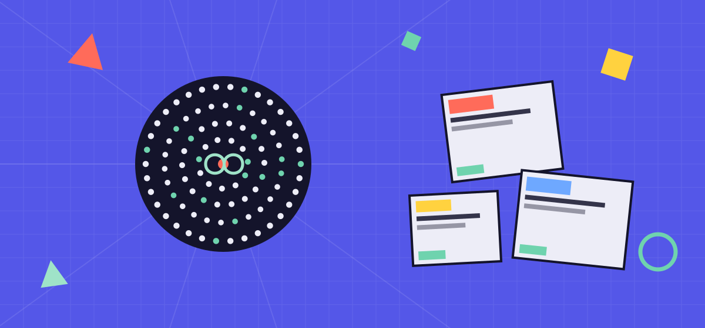
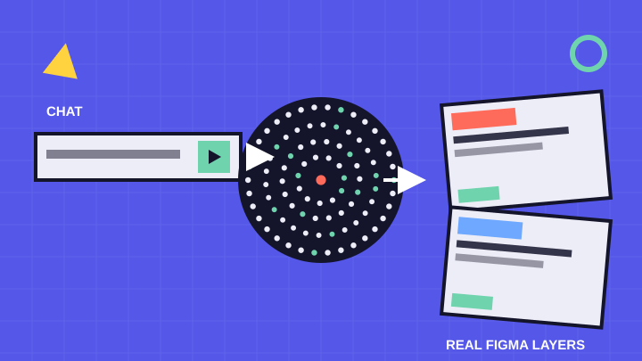

チャット1本で、Figmaに本物のレイヤーが建つ。
しかも自分のAIで動き、原本はあなたが所有できる——Figmaロックの、外へ。

Claude Code に話しかけると、編集できる"本物のFigmaデザイン"が生まれる。
画像の貼り付けではない。テキストもオートレイアウトも、そのままFigmaで続きを描ける。
Pro / Max のサブスク。設計を翻訳する頭脳。API課金は不要。
生成先。無料プランでOK。ここに本物のレイヤーが建つ。
中継を1回だけセットアップ。node setup.js で、以降はログイン時に自動起動（端末を開き続けなくてOK）。
「AIで◯◯できる」は、数ヶ月でFigma純正に追いつかれる。だから母艦が賭けるのは機能ではなく、Figmaが構造的に真似できない三つの立て付け。
Claude / Gemini / Codex——あなたのサブスクで動く。FigmaのAIクレジットもMCP設定も要らない。頭脳は交換可能で、モデルが進化すればそのまま乗れる。
作ったものは library/*.json＝あなたの資産。gitで持てて、コードに繋がる。Figmaの中に閉じない＝ロックインの外。
Figmaのビジネスはロックインとクレジット課金。母艦はその逆側に立つ。だから純正がいくら機能を足しても、母艦の価値＝所有と自由は残る。
母艦は生成競争から降りる。担うのは“その先”じゃなく“その外”——持てる・自分のAIで・ロックの外。つくるAIは純正でいい。母艦は、どの頭脳で作っても所有し・整え・コードに繋ぐ上位レイヤー。
チャットからの新規生成、表層のUI、既製DSの運用。速い。母艦はそこを取りに行かない。
所有できる原本。自分のAIで動く自由。散らかりを整え、実デザインから独自DSを育て、コードに繋ぐ——ぜんぶ、ロックの外で。
機能は“売り”ではなく、立て付けの裏付け。だから淡々と、ひと通り。
「3プランの料金表を作って」で、Figmaに本物のレイヤーが建つ。
外部バナーや手描きも。命名・フォント・余白・オートレイアウト化。「色を変えて」も会話で。
ページを読み解いて、編集可能なレイヤーへ再構成。座標・余白・配色は算出値どおり。
色→Variables、文字→Text Styles に自動抽出。実デザインからチーム独自のDSが育つ。
気に入った型を library/*.json に保存 → 再利用。gitで持ち出せる資産。
選んだフレームに、会話でキーフレームを設計。予備動作・オーバーシュートまで。
※ 詳しい使い方は How to、開発の現在地は Updates で。